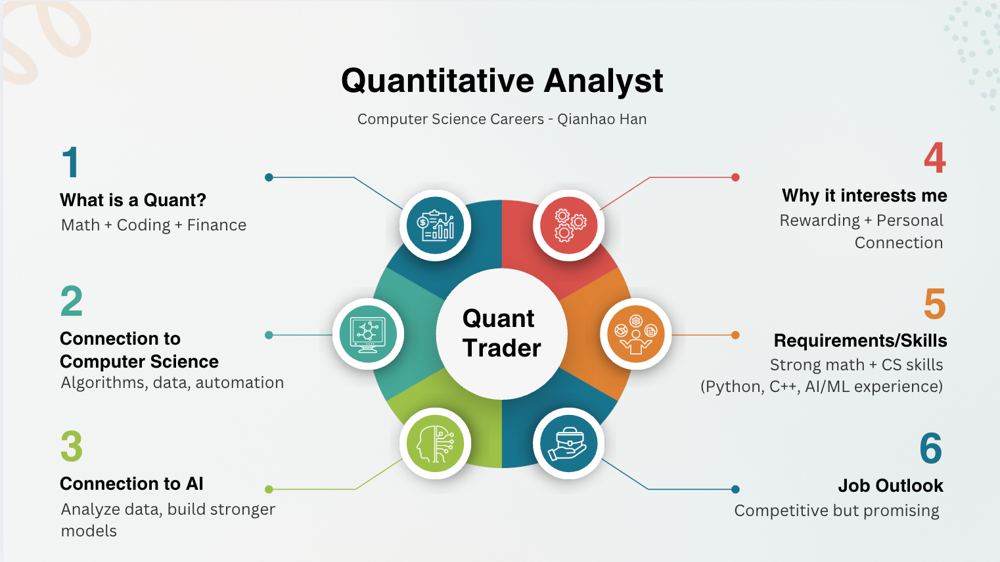

What field/career is it?
A quantitative analyst uses math, programming, and data analysis to solve problems in finance. Quants may build computer models to identify market patterns, understand financial risk, or support investment decisions.
This unit focused on exploring computer science careers and thinking critically about ethics, privacy, and responsibility in technology.
For my Careers in Computer Science presentation, I researched the role of a quantitative analyst, often called a quant trader or quant. This career connects computer science, finance, data analysis, math, and artificial intelligence.

A quantitative analyst uses math, programming, and data analysis to solve problems in finance. Quants may build computer models to identify market patterns, understand financial risk, or support investment decisions.
This career is strongly connected to computer science because quants rely on programming, algorithms, data processing, automation, and large-scale testing. They often write code to analyze large datasets and build systems that make decisions faster than a person could manually.
AI and machine learning can be used in quant work to analyze data, find patterns, improve predictions, and build stronger models. However, those models still need to be tested carefully because real financial markets are complex and unpredictable.
I am interested in this field because it combines computer science, data, math, AI, and real-world decision-making. I also became more curious about it because my brother is a quantitative researcher, which made the career feel more real and easier to understand.
There is not one required major for becoming a quant, but common fields include computer science, mathematics, statistics, physics, engineering, economics, finance, and operations research. Operations research is especially relevant because it teaches students how to use math, statistics, data analysis, and optimization to solve complex real-world decision-making problems efficiently.
Important skills include strong programming ability in languages such as Python or C++, probability, statistics, data analysis, problem-solving, and an understanding of financial markets and risk. Experience with data science, machine learning, or research can also be helpful.
Quant roles are specialized and highly competitive, so they are harder to measure than broader careers like software development. However, related career data suggests that the overall area is strong. The U.S. Bureau of Labor Statistics projects financial analyst employment to grow by 6% from 2024 to 2034, with about 29,900 openings each year on average.
I think job availability is likely to stay strong for people who can combine coding, data analysis, and AI skills. Finance is becoming more automated and data-driven, so companies will continue to need better models, stronger risk systems, and faster ways to analyze information.
Hi everyone. For this presentation, I researched the career of a quantitative analyst, which is usually shortened to a quant trader or quant. A quant is someone who uses math, programming, and data analysis to solve problems in finance. For example, they might create computer models to look for patterns in the stock market, help companies understand financial risk, or design systems that help make investment decisions.
I think this career definitely counts as computer science-related, even though it is usually connected to finance. That is because quants rely on programming, algorithms, data processing, and automation. They write code to test models, analyze very large datasets, and build systems that can make decisions faster than a person could by hand.
AI is also becoming part of this role. In quant work, AI and machine learning are used to analyze large amounts of data, find patterns, improve predictions, and build stronger models, but those models still need to be tested carefully to make sure they work reliably in real financial markets.
What interests me most about this field is that it combines several things I find interesting at once: computer science, data, math, AI, and real-world decision-making. A more personal reason I became interested in this role is that my brother is a quantitative researcher, and that is where I first learned more about it. Hearing about it through someone close to me made the career feel more real and made me more curious about it as something I might be interested in too.
To get into this field, someone usually needs a strong background in computer science, math, statistics, and finance. There is not one single required major, but common majors would include computer science, mathematics, statistics, physics, engineering, economics, finance, and operations research. Many candidates have experience with data science or machine learning, and research experience can be a plus.
Overall, being a quant is a career path that stands out to me because it combines computer science, data, AI, and finance in a challenging way, and learning about it through my brother made it feel like a real career I could see myself exploring.
For the ethical coding discussion, I chose the Snapchat privacy controversy from 2013–2014. The core issue was whether technology companies should be allowed to market privacy features in a way that creates user trust if those claims are not fully accurate.
This case about privacy on Snapchat raises questions about whether companies should be allowed to market or make claims about privacy features that are not fully true. This case had the biggest impact on me personally because Snapchat is a platform that many students, including myself, still use today. It makes the issue feel relevant because users my age often trust apps with personal conversations, photos, and videos without thinking of who may be able to access them. The controversy shows that even when an app seems private, users still need to be careful about what they share.
This case raises questions about honesty, informed consent, privacy-by-design, and user responsibility. If an app presents itself as private, users may share more sensitive information than they otherwise would. That means companies have a responsibility to clearly explain what their apps can and cannot protect.
This situation connects to the ACM Code of Ethics because computing professionals are expected to avoid harm, be honest and trustworthy, respect privacy, and honor confidentiality. A product that creates a misleading sense of privacy can affect user safety and trust, especially when the app is used by young people.